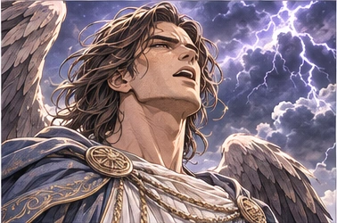
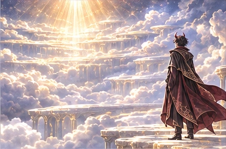
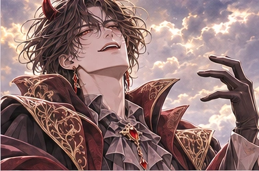

장면 03 / 28
Prolog im Himmel천상의 서곡
이 장의 한국어 본문 번역은 준비 중입니다. 현재는 제목·목차만 병기되어 있습니다. / Korean body translation pending.
 천상의 세 대천사
천상의 세 대천사Der Herr. Die himmlischen Heerscharen. Nachher Mephistopheles.
Die drei Erzengel treten vor.
RAPHAEL.
라파엘의 태양 찬가Die Sonne tönt, nach alter Weise,
In Brudersphären Wettgesang,
Und ihre vorgeschriebne Reise
Vollendet sie mit Donnergang.
Ihr Anblick gibt den Engeln Stärke,
Wenn keiner sie ergründen mag;
die unbegreiflich hohen Werke
Sind herrlich wie am ersten Tag.
GABRIEL.
 가브리엘의 세계 찬가
가브리엘의 세계 찬가Und schnell und unbegreiflich schnelle
Dreht sich umher der Erde Pracht;
Es wechselt Paradieseshelle
Mit tiefer, schauervoller Nacht.
Es schäumt das Meer in breiten Flüssen
Am tiefen Grund der Felsen auf,
Und Fels und Meer wird fortgerissen
Im ewig schnellem Sphärenlauf.
MICHAEL.

미카엘의 폭풍 찬가Und Stürme brausen um die Wette
Vom Meer aufs Land, vom Land aufs Meer,
und bilden wütend eine Kette
Der tiefsten Wirkung rings umher.
Da flammt ein blitzendes Verheeren
Dem Pfade vor des Donnerschlags.
Doch deine Boten, Herr, verehren
Das sanfte Wandeln deines Tags.
ZU DREI.
 세 대천사의 합창
세 대천사의 합창Der Anblick gibt den Engeln Stärke,
Da keiner dich ergründen mag,
Und alle deine hohen Werke
Sind herrlich wie am ersten Tag.
MEPHISTOPHELES.

메피스토펠레스의 등장Da du, o Herr, dich einmal wieder nahst
Und fragst, wie alles sich bei uns befinde,
Und du mich sonst gewöhnlich gerne sahst,
So siehst du mich auch unter dem Gesinde.
Verzeih, ich kann nicht hohe Worte machen,
Und wenn mich auch der ganze Kreis verhöhnt;
Mein Pathos brächte dich gewiß zum Lachen,
Hättst du dir nicht das Lachen abgewöhnt.
 인간에 대한 조롱
인간에 대한 조롱Von Sonn’ und Welten weiß ich nichts zu sagen,
Ich sehe nur, wie sich die Menschen plagen.
Der kleine Gott der Welt bleibt stets von gleichem Schlag,
Und ist so wunderlich als wie am ersten Tag.
Ein wenig besser würd er leben,
Hättst du ihm nicht den Schein des Himmelslichts gegeben;
Er nennt’s Vernunft und braucht’s allein,
Nur tierischer als jedes Tier zu sein.
Er scheint mir, mit Verlaub von euer Gnaden,
Wie eine der langbeinigen Zikaden,
Die immer fliegt und fliegend springt
Und gleich im Gras ihr altes Liedchen singt;
Und läg er nur noch immer in dem Grase!
In jeden Quark begräbt er seine Nase.
DER HERR.
빛의 응답Hast du mir weiter nichts zu sagen?
Kommst du nur immer anzuklagen?
Ist auf der Erde ewig dir nichts recht?
MEPHISTOPHELES.
 인간의 고통을 말하다
인간의 고통을 말하다Nein Herr! ich find es dort, wie immer, herzlich schlecht.
Die Menschen dauern mich in ihren Jammertagen,
Ich mag sogar die Armen selbst nicht plagen.
DER HERR.
 파우스트를 아느냐
파우스트를 아느냐Kennst du den Faust?
MEPHISTOPHELES.
Den Doktor?
DER HERR.
Meinen Knecht!
MEPHISTOPHELES.

끝없는 갈망을 논하다Fürwahr! er dient Euch auf besondre Weise.
Nicht irdisch ist des Toren Trank noch Speise.
Ihn treibt die Gärung in die Ferne,
Er ist sich seiner Tollheit halb bewußt;
Vom Himmel fordert er die schönsten Sterne
Und von der Erde jede höchste Lust,
Und alle Näh und alle Ferne
Befriedigt nicht die tiefbewegte Brust.
DER HERR.
 길을 찾으리라는 신뢰
길을 찾으리라는 신뢰Wenn er mir auch nur verworren dient,
So werd ich ihn bald in die Klarheit führen.
Weiß doch der Gärtner, wenn das Bäumchen grünt,
Das Blüt und Frucht die künft’gen Jahre zieren.
MEPHISTOPHELES.
내기의 제안Was wettet Ihr? den sollt Ihr noch verlieren!
Wenn Ihr mir die Erlaubnis gebt,
Ihn meine Straße sacht zu führen.
DER HERR.
 유혹을 허락하다
유혹을 허락하다Solang er auf der Erde lebt,
So lange sei dir’s nicht verboten,
Es irrt der Mensch so lang er strebt.
MEPHISTOPHELES.
Da dank ich Euch; denn mit den Toten
Hab ich mich niemals gern befangen.
Am meisten lieb ich mir die vollen, frischen Wangen.
Für einen Leichnam bin ich nicht zu Haus;
Mir geht es wie der Katze mit der Maus.
DER HERR.
Nun gut, es sei dir überlassen!
Zieh diesen Geist von seinem Urquell ab,
Und führ ihn, kannst du ihn erfassen,
Auf deinem Wege mit herab,
Und steh beschämt, wenn du bekennen mußt.
Ein guter Mensch, in seinem dunklen Drange,
Ist sich des rechten Weges wohl bewußt.
MEPHISTOPHELES.
Schon gut! nur dauert es nicht lange.
Mir ist für meine Wette gar nicht bange.
Wenn ich zu meinem Zweck gelange,
Erlaubt Ihr mir Triumph aus voller Brust.
Staub soll er fressen, und mit Lust,
Wie meine Muhme, die berühmte Schlange.
DER HERR.
Du darfst auch da nur frei erscheinen;
Ich habe deinesgleichen nie gehaßt.
Von allen Geistern, die verneinen,
ist mir der Schalk am wenigsten zur Last.
Des Menschen Tätigkeit kann allzu leicht erschlaffen,
er liebt sich bald die unbedingte Ruh;
Drum geb ich gern ihm den Gesellen zu,
Der reizt und wirkt und muß als Teufel schaffen.
Doch ihr, die echten Göttersöhne,
Erfreut euch der lebendig reichen Schöne!
Das Werdende, das ewig wirkt und lebt,
Umfass euch mit der Liebe holden Schranken,
Und was in schwankender Erscheinung schwebt,
Befestigt mit dauernden Gedanken!
 천상이 닫히다
천상이 닫히다(Der Himmel schließt, die Erzengel verteilen sich.)
MEPHISTOPHELES (allein).
 홀로 남은 악마
홀로 남은 악마Von Zeit zu Zeit seh ich den Alten gern,
Und hüte mich, mit ihm zu brechen.
Es ist gar hübsch von einem großen Herrn,
So menschlich mit dem Teufel selbst zu sprechen.
FAUST: Der Tragödie erster Teil